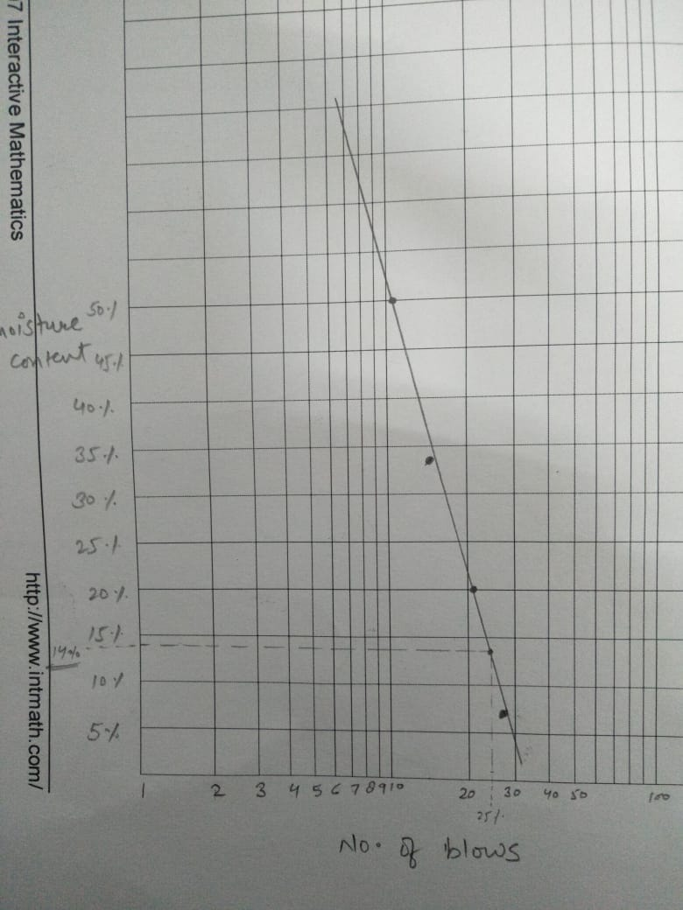

Liquid Limit Test
Result
Plot the relationship between water content (on y-axis) and number of blows (on x-axis) on semi-log graph.
the graph which we will get looks like

The curve obtained is called flow curve.
The moisture content corresponding to 25 blows as read from curve is the liquid limit of that soil